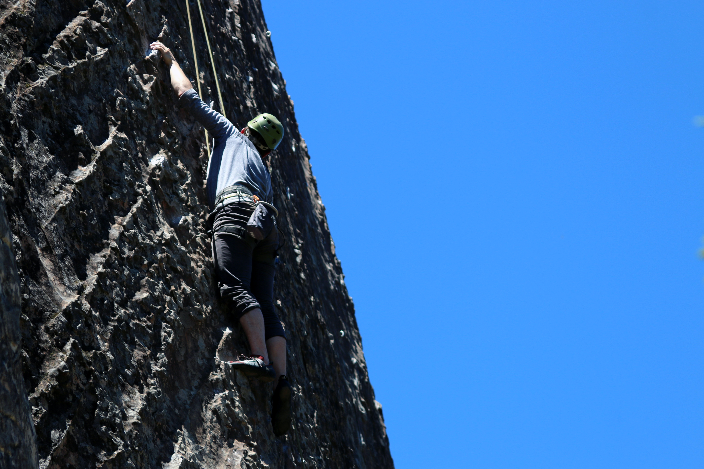

stage débutant
stage dans le jura

Grimpez avec une vue imprenable sur les vignes, le lac de Bienne et les Alpes! Lors de ce weekend, vous allez découvrir la région d’origine de votre professeur d’escalade et améliorer votre technique de pieds sur le calcaire blanc du Jura.
Prochaines dates: au printemps 2022 – veuillez écrire à info@genevarocks.ch en cas d’intérêt
Durée: 2 jours
Prix membre: 495 CHF / Non-membre: 545 CHF (inclus trajet en voiture depuis Genève, matériel d’escalade et logement en chambre double avec petit-déjeuner ; la taille du groupe varie entre 3 et 6 personnes)
stage en Provence
Ce stage devient un classique – et il est accessible aux débutant(e)s! Sportif, dans une ambiance détendue et avec des repas délicieux, il est largement apprécié. Nous sommes tombés amoureux des beaux rochers blancs au milieu des vignes et des oliviers il y a longtemps déjà.
Prochaines dates: cours sur demande – veuillez écrire à info@genevarocks.ch en cas d’intérêt
Durée: 2 jours
Prix membre: 495 CHF / Non-membre: 545 CHF (inclus trajet en voiture depuis Genève, logement en chambre double avec petit-déjeuner, repas du samedi soir et matériel d’escalade ; la taille du groupe varie entre 3 et 6 personnes)
stage alpage
Relaxez en prenant de l’altitude! Ce lieu est parfait pour commencer à grimper. Les voies sont facilement accessibles et situés dans un paysage majestueux et paisible. Nous allons loger dans un vieux chalet alpin en bois qui ressemble à celui de Heidi et profiter des mets locaux sur la terrasse.
Prochaines dates: en été 2022 – veuillez écrire à info@genevarocks.ch en cas d’intérêt
Durée: 2 jours
Prix membre: 495 CHF / Non-membre: 545 CHF (inclus trajet en voiture depuis Genève, matériel d’escalade et logement en chambre double ; la taille du groupe varie entre 3 et 6 personnes)
Stage a Fontainebleau

Il n’y a pas mieux pour commencer à grimper et/ou pour améliorer sa technique! Ca fait une douzaine d’années que nous nous amusons sur les magnifiques blocs de grès sur le sable au milieu de la forêt magique de Fontainebleau et nous réjouissons de vous faire découvrir! Escalade sans corde, avec matelas comme protection.
Prochaines dates: cours sur demande – veuillez écrire à info@genevarocks.ch en cas d’intérêt
Durée: 2 jours
Prix membre: 795 CHF / Non-membre: 850 CHF (inclus trajet en voiture depuis Genève, logement en chambre double avec petit-déjeuner et matériel d’escalade; la taille du groupe varie entre 3 et 6 personnes)